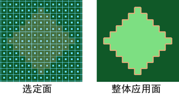

在“全部”(All)选项打开时使用“整体应用绘制”(Flood Paint)，可以快速地将一个颜色应用于整个纹理，而无需绘制各个笔划。也可以使用“整体应用擦除”(Flood Erase)按钮擦除自上次保存后在纹理上绘制的所有内容。
在“选定面”(Selected faces)处于打开状态下，“整体应用绘制”(Flood Paint)按钮和“整体应用擦除”(Flood Erase)按钮可以对多边形整体应用选定面。
整体应用整个纹理
整体应用绘制整个纹理
- 在“整体应用”(Flood)区域中，指定“颜色”(Color)和“不透明度”(Opacity)值。
- 将“整体应用”(Flood)设定为“全部”(All)。
- 单击 “整体应用绘制”(Flood Paint)按钮。
整体应用擦除整个纹理
- 在“整体应用”(Flood)区域中，指定“不透明度”(Opacity)值。
- 将“整体应用”(Flood)设定为“全部”(All)。
- 单击“整体应用擦除”(Flood Erase)按钮。
整体应用选定的多边形面

整体应用绘制选定的面
- 选择要绘制的面。必须已经为曲面指定了纹理。
- 选择“3D 绘制工具”(3D Paint Tool)。选定面周围将显示一个轮廓。
- 在“整体应用”(Flood)区域指定“颜色”(Color)和“不透明度”(Opacity)值。
- 将“整体应用”(Flood)设定为“选定面”(Selected faces)。
- 单击“整体应用绘制”(Flood Paint)。
整体应用擦除选定面
- 选择要擦除的面。必须已经为曲面指定了纹理。
- 选择“3D 绘制工具”(3D Paint Tool)。选定面周围将显示一个轮廓。
- 若要进行更平缓或细微的擦除，请在“整体应用”(Flood)区域，设定“不透明度”(Opacity)。若要完全擦除自上次保存后的所有绘制，请将“不透明度”(Opacity)设置保留为 1。
- 将“整体应用”(Flood)设定为“选定面”(Selected faces)。
- 单击“整体应用擦除”(Flood Erase)。